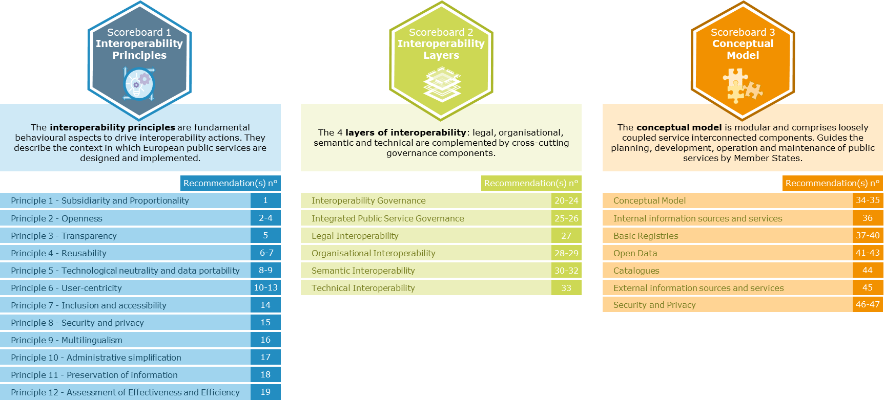
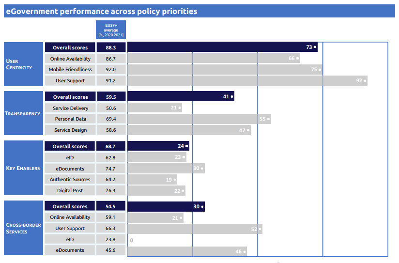
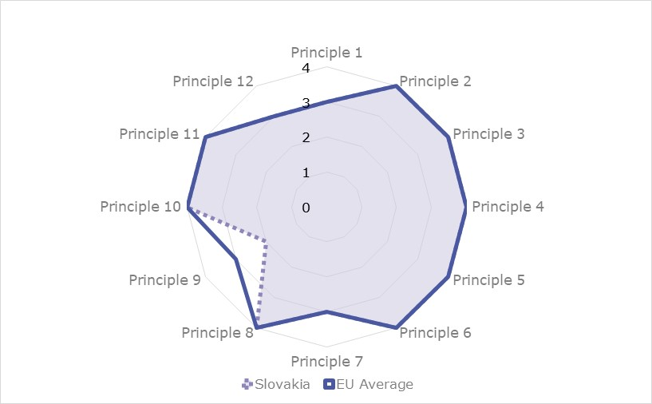

ISA2
 Table of Contents
Table of ContentsDigital Public Administration factsheet 2022
Romania
2 Digital Public Administration Highlights 10
3 Digital Public Administration Political Communications 12
4 Digital Public Administration Legislation 16
5 Digital Public Administration Governance 24
6 Digital Public Administration Infrastructure 27
7 Cross-border Digital Public Administration Services for Citizens and Businesses 32

Country
Profile
1
The following graphs present data for the latest eGovernment Indicators for Romania compared to the European Union (EU) average. Statistical indicators in this section reflect those of Eurostat at the time the Edition is being prepared.
Percentage of individuals using the internet for interacting with public authorities in Romania | Percentage of individuals using the internet for obtaining information from public authorities in Romania | ||
Percentage of individuals using the internet for downloading official forms from public authorities in Romania | Percentage of individuals using the internet for submitting completed forms to public authorities in Romania | ||
In 2017, the European Commission published the European Interoperability Framework (EIF) to give specific guidance on how to set up interoperable digital public services through a set of 47 recommendations. The picture below represents the three pillars of the EIF around which the EIF Monitoring Mechanism was built to evaluate the level of implementation of the EIF within the Member States. It is based on a set of 71 Key Performance Indicators (KPIs) clustered within the three main pillars of the EIF (Principles, Layers and Conceptual model), outlined below.

Source: European Interoperability Framework Monitoring Mechanism 2021
For each of the three pillars, a different scoreboard was created to breakdown the results into their main thematic areas (i.e. the 12 principles of interoperability, the interoperability layers and the components of the conceptual model). The thematic areas are evaluated on a scale from one to four, where one means a lower level of implementation and 4 means a higher level of implementation. The graphs below show the result of the second EIF Monitoring Mechanism data collection exercise for Romania in 2021.
Source: European Interoperability Framework Monitoring Mechanism 2021
Romania’s results in Scoreboard 1 show a medium implementation of the EIF Principles, scoring at the European average for various Principles, including Principle 1 (Subsidiarity and Proportionality), Principle 3 (Transparency) and Principle 11 (Preservation of information). Nonetheless, areas of improvements should be concentrated in Principle 2 (Openness), Principle 7 (Inclusion and accessibility) and Principle 12 (Assessment of effectiveness and efficiency) for which the scores of 1 show a low performance in the implementation of corresponding recommendations. Indeed, Romania could work towards ensuring a level playing field for open-source software and demonstrate further active and fair consideration of using open-source software (Principle 2 – Recommendation 3) as well as ensuring that its citizens have access to all European public services, including persons with disabilities, the elderly and other disadvantaged groups (Principle 7 – Recommendation 14).
Source: European Interoperability Framework Monitoring Mechanism 2021
The Romanian results for the implementation of interoperability layers shows a medium-low performance in the implementation of corresponding recommendations, except for the implementation of the organisational interoperability layer, for which the country received the highest score. However, potential areas of improvement could be in the interoperability governance, the integrated public service governance, the legal interoperability as well as in technical interoperability. More specifically, Romania could firstly focus on putting in place processes to select relevant standards and specifications, to evaluate them, as well as to monitor their implementation, check their compliance and test their interoperability (Interoperability governance – Recommendation 21). Additionally, in terms of legal interoperability, Romania should work towards ensuring that its legislation is screen by means of “interoperability checks”, so as to identify any barriers to interoperability (Legal interoperability – Recommendation 27).
Source: European Interoperability Framework Monitoring Mechanism 2021
Romania’s scores assessing the Conceptual Model in Scoreboard 3 shows a medium performance with regard to the implementation of recommendations, although it scores at the EU average for the recommendations related to external information sources and services. However, room for improvement is found in relation to the implementation of recommendations associated with internal information sources and services, and catalogues, which received the score of 1. In fact, there is room for improvement with regard to internal information sources and services, where Estonia’s score of 1 is below that of the EU average. More specifically, the country should work towards the development of a shared infrastructure of reusable services and information sources that can be used by all public administrations (Internal information sources and services – Recommendation 36) as well as ensuring it has in place catalogues of public services, public data, and interoperability solutions and use common models for describing them (Catalogues – Recommendation 44).
Additional information on Romania’s results on the EIF Monitoring Mechanism is available online through interactive dashboards.
The graph below presents the main highlights of the latest eGovernment Benchmark Report, an assessment of eGovernment services in 36 countries: the 27 European Union Member States, as well as Iceland, Norway, Montenegro, the Republic of Serbia, Switzerland, Turkey, Albania and Macedonia (referred to as the EU27+).
The study evaluates online public services on four dimensions:
The 2022 report presents the biennial results, achieved over the past two years of measurement of all nine life events used to measure the above-mentioned key dimensions. More specifically, these life events are divided between seven ‘Citizen life events’ (Starting a small claim procedure, Moving, Owning a car, Health measured in 2021, and Career, Studying, Family life, measured in 2020) and two ‘Business life events’ (Regular Business Operations, measured in 2021, and Business start-up, measured in 2020).

Source: eGovernment Benchmark Report 2022 Country Factsheet
Digital Public Administration Political Communications |
No recent political communication was adopted in this field to date.
Digital Public Administration Legislation |
Following the Regulation 2019/1150 (EU) governing the business relationships between providers of online intermediation services and the commercial users listed on marketplace, the Romanian government also put forward the GEO 23/2021 law which laid down measures to guarantee the implantation of the regulation at national level. The new law defines sanctions (i.e. between 0.1% and 1% of the turnover of the previous year) to be applied to providers of online intermediation services in case of non-compliance with provisions such as, among others, the procedures and deadlines to amend the terms and conditions and the protection of transparency on ranking and differential treatment.
The Law regarding the exchange of data between IT systems and establishing the national platform of interoperability has entered public consultation in mid-March 2022.
Digital Public Administration Governance |
The National Directorate of Cybersecurity (DNSC) is the new institutional body established to deal with research, development and expertise in the field of cybersecurity. It is the successor of the Romanian National Computer Security Incident Response Team (CERT). DNSC is a specialised organisation responsible for preventing, analysing, identifying and reacting to cyber-incidents. It is also responsible for elaborating and distributing public policies for preventing and counteracting the incidents that occur within national cyberinfrastructures
Digital Public Administration Infrastructure |
The National System of Interoperability (SNI) was launched in November 2021 and will connect the databases of Romania’s public administrations.
Since April 2021, the National Agency for Tax Administration (ANAF) started offering the possibility to private companies to electronically register to the One-Stop-Shop (OSS) system which became operational in July of the same year. The OSS system allows businesses to benefit from e-services for the registration and reporting of VAT across EU Member States. The objective of the OSS system is the decrease the administrative burden on the public sector while facilitating the trade across EU Member States.
Digital Public Administration Political Communications
3
Digital Public Administration Political Communications
3

Berlin Declaration on Digital Society and Value-Based Digital Government
In December 2020, the Romanian government signed the Berlin Declaration on Digital Society and Value-Based Digital Government, thus re-affirming its commitment – together with other EU Member States – to foster digital transformation in order to allow citizens and businesses to harness the benefits and opportunities offered by modern digital technologies. The Declaration aims to contribute to a value-based digital transformation by addressing and strengthening digital participation and digital inclusion in European societies.
eRomania - A Public Policy in eGovernment
The eRomania policy aims to increase the capacity of Romanian institutions and public authorities to develop and implement eGovernment solutions. The problem underlying public policy in the field of eGovernment in Romania is the insufficient development of public eServices, an issue that is evident when taking a look at the small number of electronic public services made available to the public that go beyond level-2 digital sophistication (one-way interaction with citizens, e.g. downloading electronic forms). An eRomania public policy was thus urgently needed.
The policy revolves around 36 life events, representing a series of important public services in the lives of citizens and legal entities. The following four objectives were identified:
In order to achieve the above-mentioned objectives, 14 specific strategic and complementary measures were defined, representing fundamental decisions acting in synergy to build an effective and sustainable change programme.
Approval of the Romanian Interoperability Framework
The approval of the Romanian Interoperability Framework (RIF), in December 2017, set out the goal to guide, promote and support the delivery of Romanian public services by fostering cross-border, cross-organizational and cross-sector interoperability. The framework addressed issues such as its underlying principles, the conceptual model for public services, the interoperability levels and the interoperability dimension in the decision‑making processes of Romanian public services to support the implementation of Romanian policy initiatives.
No political communication was adopted in this field to date.
In 2020, a project was financed with European funds to build a digital identity system. The project aims to provide an effective and easy way to gain additional security for users’ identity verification. Additional information can be found here.
However, no National Electronic Identification Scheme has been established yet in Romania.
National Cybersecurity Strategy
In 2013, Romania adopted the National Cybersecurity Strategy. The purpose of Romania’s cybersecurity strategy was to define and maintain a secure virtual environment, with a high degree of resilience and confidence, based on national cyberinfrastructures.
The strategy set the following objectives:
The National Cybersecurity Strategy was approved by Government Decision No. 271/2013. The strategic coordination of the activities at national level to ensure a high common level of security of the networks and information systems is achieved by the government through the responsible authority of the new Agency for the Digitisation of Romania, under the coordination of the Prime Minister.
In 2018, a strategic framework was approved by law (through Law No. 362/2018 on Ensuring a High Common Level of Security of Computer Networks and Systems), transposing Directive (EU) 2016/1148, also known as the NIS Directive.
No political communication was adopted in this field to date.
No political communication was adopted in this field to date.
Public Policy in the Field of eCommerce
In the first quarter of 2019, Romania developed a policy aimed at improving and promoting the availability of eCommerce solutions across the country in line with European Commission guidelines. The document provided an extensive overview of the state-of-play of eCommerce development and outlined the main directions and strategic goals for the future.
The strategy was accompanied by an action plan, which detailed a list of actions and deadlines for each of the objectives of the strategy. The main objectives set out for the development of eCommerce solutions in Romania are:
National Strategy for Research Innovation and Smart Specialisation
The strategy will be approved by government decision. The public consultations ended, and the legislative procedures are still ongoing.
No political communication was adopted in this field to date.
No political communication was adopted in this field to date.
No political communication was adopted in this field to date.
No political communication was adopted in this field to date.
No political communication was adopted in this field to date.

Government Decision on the Organisation and Operation of the Electronic Point of Single Contact
Decision No. 922/2010, which aimed to regulate the operation of the Electronic Point of Single Contact, was published on 15 September 2010. It was based on Law No. 49/2009 concerning the freedom of establishment and provision of services by electronic means in Romania. The Electronic Point of Single Contact Portal (electronic PCU) was designed and established to facilitate online interaction between public institutions and service providers in Romania. By publishing information and useful links, and facilitating the online obtainment of permits, approvals and certificates needed for market penetration, the procedures for both domestic and foreign businesses have become easier and more transparent.
Emergency Ordinance No. 41/2016
The ordinance, issued in July 2016, introduced the obligation for public authorities to accept documents in electronic format upon citizens’ request and reuse any personal data previously transmitted to the public administration. Moreover, the ordinance stipulated new rules concerning the source code for information and communication technology (ICT) systems developed under an eProcurement contract. The ordinance also established a national Chief Information Officer (CIO) in partnership with the Ministry of Communication and Information Society and the rest of the government.
Draft Law on the National Interoperability Framework
The Draft Law on the National Interoperability Framework establishes the rights and obligations of the operators of computer systems used to offer electronic public services. The law sets the principles and goals to be achieved with the transposition of the interoperability framework and identifies the authorities responsible for its implementation. It also settles the rules for the National System of Authentication, which allows secure authentication of public services’ users, and the National Depositary of Documents (DND), an information system that allows for secure storage of individuals and legal entities documents. Finally, the law specifies the technical and methodological rules concerning the National Interoperability Framework.
The law states that within 90 days of the publication of technical and methodological rules, the operators of computer systems which provide electronic public services, together with the institutions responsible for managing the National Electronic Registers (REN), will have to implement the necessary actions to accept and process requests submitted by citizens through the National Electronic System (NES). They will also accept and process the requests received from other computer systems through which public services are available. Also, the automatic acquisition of information that already exists within the national electronic registries has to be ensured, in order to eliminate repeated introduction of data. Failure to comply with established law will lead to a fine.
Law on the Exchange of Data between IT Systems
The Law on the exchange of data between IT systems establishing the national platform of interoperability has entered the public consultation phase in mid-March 2022.
Directive (EU) 2019/1024 on Open Data and the Re-use of Public Sector Information
The Romanian authorities are in the process of drafting the law transposing Directive (EU) 2019/1024 of the European Parliament and of the Council of 20 June 2019 on open data and the re-use of public sector information. The law was approved by the Government in January 2022 and is currently being assessed by the Parliament commissions prior to its adoption.
Government Ordinance on the Accessibility of Websites and Mobile Applications of Public Sector Bodies
The Romanian government adopted on 21 December 2018 the Emergency Ordinance on the Accessibility of Websites and Mobile Applications of Public Sector Bodies. This regulatory act aims to establish requirements for the accessibility of websites and mobile applications of public sector bodies to enable them to be more easily accessed by users, especially by the elderly and disabled.
In this way, citizens will be able to benefit from wider access to public sector services through websites and mobile applications to receive services and information that simplify their daily lives and make it easier to exercise their rights at national and European Union level, in particular the right to free movement and the right to establish and provide services.
Law on Free Access to Information of Public Interest
Law No. 544/2001 was initially published in October 2001. However, it should be noted that the methodological norms for applying the law were approved by Government Decision No. 123/2002 on 7 February 2002 and subsequently published on 8 March 2002.
The regulations state that “free and unrestrained access to information of public interest shall be the rule and limitation of access shall be the exemption”. More specifically, it allows any person to request information from public authorities and State companies. The authorities have to respond within 10 days. Public employees could be disciplined for refusing to disclose information. Also, the authorities are obliged to publish a wide variety of basic information on their structures and activities, including their register of ‘documents of public interest’.
Public Sector Information Law
Romania has notified full transposition of Directive 2003/98/EC on the re-use of public sector information, achieved by Law No. 109, published on 5 May 2007.
Government Decision No. 1085/2003
The aim of Government Decision No. 1085/2003 was to implement certain provisions of Law No. 161/2003, regarding measures for ensuring transparency in the exercise of public duties and functions in the business environment, thus pursuing the prevention and punishment of corruption related to the implementation of the NES. Furthermore, public administration authorities were obliged to register in the NES.
Law on the Archiving of Documents in Electronic Form
Adopted in May 2007, Law No. 135/2007 established the legal regime applicable to the creation, preservation, consultation and use of administration's documents to be archived or stored in an electronic format. Processing operations for archiving documents in electronic form had to be in compliance with Law No. 16/1996 on National Archives, with subsequent amendments, and regulations on conservation, access and data protection to both public and private domains. This law was supplemented in June 2009 by Order No. 493/2009 issued by the Ministry of Communications and Information Technology, that clarified all technical and methodological applications.
Law on eID and Trust Services for Electronic Transactions
In compliance with the eIDAS Regulation, Romania passed a specific Law on eID and Trust Services for Electronic Transactions. The law established the legal regime of the electronic signature and of legal documents in electronic form, as well as the conditions for the provision of reliable services.
Law on the Protection of Persons concerning the Processing of Personal Data and the Free Circulation of such Data
Law No. 677/2001 allowed individuals to access and correct personal information held by public or private bodies. It was complemented by recent additions such as Law No. 55/2005, (OJ No. 244 of 23 March 2005), which ratified the Additional Protocol to the Convention for the Protection of Individuals with Regard to Automatic Processing of Personal Data, referring to control authorities and cross-border data flow. Furthermore, a National Supervisory Authority for Personal Data Processing was established in 2005 by Law No. 102/2005 (OJ No. 391 of 09 May 2005). All data protection files previously kept by the Ombudsman were handed over to the Authority, which supervises and controls the legality of personal data processing under Law No. 677/2001.
Law on the Processing of Personal Data and the Protection of Privacy in the Electronic Communications Sector
The Law on the Processing of Personal Data and the Protection of Privacy in the Electronic Communications Sector replaced Law No. 676 of 21 November 2001 on the Processing of Personal Data and the Protection of Privacy in the Telecommunications Sector. It closely followed Directive 2002/58/EC on personal data processing and privacy protection in the electronic communications sector.
Draft Law on the Minimum-Security Measures of Information Systems in Public Administration
The Draft Law on the Minimum-Security Measures of Information Systems in Public Administration was created for the protection of the public administration’s information systems. Security actions were identified thanks to the framing and descriptions of the organisational, physical and IT security measures for data protection.
Anti-corruption Law
The Anti-corruption Law comprises stipulations concerning transparency in information management and electronic public services’ administration by demanding that financial statements of public officials be published online. Also, it includes provisions for preventing and fighting cybercrime.
Draft Law on National Electronic Registers
The Draft Law on National Electronic Registers ensured the coverage, constitution, administration and operation of the REN. It aimed to reduce the duplication of the data used by the public sector, prevent the repeated collection of information from persons or bodies (the Once-Only principle), and ensure the reliability and safety of the data. The law was mainly intended for individuals and institutions involved in setting strategies for the information society, as well as in the design and operation of electronic services. The REN were defined by law as “collections of information and data originated from social entities, in electronic format, considered as authentic sources of information”. The REN are: Population Registry, Tax Registry, Trade Registry, Cadastral and Land Registry (territorial identification, addresses and properties), Vehicle Registry, Social Insurance Registry, and Support Registry for Students.
Government Emergency Ordinance on the Award of Public Procurement Contracts, Public Works Concession Contracts and Services Concession Contracts
Adopted in June 2006, the Government Emergency Ordinance on the Award of Public Procurement Contracts, Public Works Concession Contracts and Services Concession Contracts revoked all previous acts containing provisions on public procurement and merged the two European Commission eProcurement directives (2004/17/EC and 2004/18/EC) into a single act. The legal framework for public acquisitions was finalised in 2016, leading to an update of the SEAP, the national procurement portal.
Law approving the Government Emergency Ordinance on the Award of Public Procurement Contracts, Public Works Concession Contracts and Services Concession Contracts
The Law approving the Government Emergency Ordinance on the Award of Public Procurement Contracts, Public Works Concession Contracts and Services Concession Contracts sets forth the approval of Government Emergency Ordinance No. 34/2006, and introduces amendments and supplements.
Law on Public Procurement
The new Law on Public Procurement was published in the Official Journal No. 390 on 23 May 2016. In addition to laying out new rules for the application of provisions concerning the award of public procurement contracts, the law also included an update of the national procurement portal.
Government Decision on the Approval of Application Norms for the Award of Public Contracts by Electronic Means
The Government Decision on the Approval of Application Norms for the Award of Public Contracts by Electronic Means was set out in the Government Emergency Ordinance No. 34/2006 on the Award of Public Procurement Contracts, Public Works Concession Contracts and Services Concession Contracts. It focused mainly on the application of Article 21(a) of Government Emergency Ordinance No. 34/2006, in order to make technical facilities available for contracting authorities, and apply fully electronic and open tendering procedures.
Government Decision on the Approval of the Application Norms for the Provisions concerning the Award of the Public Procurement Contracts using Electronic Means
The Government Decision on the Approval of the Application Norms for the Provisions concerning the Award of the Public Procurement Contracts using Electronic Means was set out in Government Emergency Ordinance No. 34/2006 on the Award of Public Procurement Contracts, Public Works Concession Contracts and Services Concession Contracts. This decision was supplemented by Government Decision No. 1337/2006 and mainly emphasised the approval of rules for implementing provisions included in Government Emergency Ordinance No. 34/2006.
Government Ordinance on the Modification and Completion of Government Emergency Ordinance No. 34/2006
The Government Ordinance on the Modification and Completion of Government Emergency Ordinance No. 34/2006 was published on 4 October 2007. It introduced important changes in the existing eProcurement legal framework.
Government Decision on Consular Services for which Fees are Charged and the Level of Consular Fees at the Diplomatic Missions and Consular Offices of Romania Abroad
The main purpose of the Government Decision on Consular Services was to amend and supplement norms for the application of provisions regarding the award of procurement contracts electronically published through the Government Emergency Ordinance No. 34/2006 on the Award of Public Procurement Contracts, Public Works Concession Contracts and Services Concession Contracts approved by Government Decision No. 1660/2006. This legal act was the legislative expression of the Manchester Declaration of 2005 as agreed by ministers in charge for eGovernment politics from EU Member States, and candidate and EFTA countries. The Declaration set out a new strategic direction for European eGovernment up to 2010, with the aim of including every citizen, business and government in the social and economic benefits that IT-enabled public services can deliver.
eInvoicing Legislation
The Fiscal Code from 2015, in force from 1 January 2016, and its implementing rules approved by Law No. 227/2015, govern the electronic invoicing in Romania.
Additional legislation may apply if electronic signature or electronic archiving are used in the process of electronic invoicing:
The Ministry of Public Finance is the authority responsible for eInvoicing in Romania.
Law on Electronic Commerce
The Law on Electronic Commerce, adopted in June 2002 and modified in May 2006 by Law No. 121/2006, transposed the main provisions of Directive 2000/31/EC on eCommerce. It defines eCommerce and other basic concepts, such as electronic messaging or the exchange of data over the internet. The main points addressed include: free movement of information society services, contracts concluded by electronic means, commercial communications through electronic means and ePayments forgery. Furthermore, it stipulates severe penalties for the possession of equipment for falsifying electronic payment instruments. It also establishes who may start an eBusiness registered in Romania and how.
More recently, following Regulation 2019/1150 (EU) governing the business relationships between providers of online intermediation services and the commercial users listed on marketplace, the Romanian government put forward GEO 23/2021, which laid down measures to guarantee the regulatory implementation at national level. The new law defines sanctions (i.e. between 0.1% and 1% of the turnover of the previous year) to be applied to providers of online intermediation services in case of non-compliance with provisions such as, among others, the procedures and deadlines to amend the terms and conditions and the transparency on ranking and differential treatment.
Law on Electronic Registration of Commercial Operations
The Law on Electronic Registration of Commercial Operations established the legal regime of electronic documents containing data on economic transactions related to the sale or exchange of goods or services between persons issuing and receiving invoices, tax bills or receipts in electronic form. It was supplemented by statutory provisions concerning the conclusion, validity and effects of legal acts, as well as those provided by Law No. 571/2003 as amended and additional normative acts.
Law on the Issuance and Use of Electronic Payment Instruments and the Relationship between Users of such Transactions
The Law on the Issuance and Use of Electronic Payment Instruments and the Relationship between Users of such Transactions laid down the provisions to regulate the issuance and use of ePayment instruments throughout Romania and to monitor the activities of such instruments, as well as the conditions to be met by providers, users and other institutions involved in the process.
Order on the Procedure for Approval of Payment Instruments with Remote Access
This legislative initiative, published on 19 July 2007, applied to payment transactions in internet banking, home banking or mobile banking. The aim was to create an environment in which internet banking transactions could be accomplished with confidentiality, protection of personal data, safety and authenticity.
Government Ordinance on the Collection of Local Taxes by Electronic Means
The Government Ordinance on the Collection of Local Taxes by Electronic Means sets the deployment of electronic systems for local tax collection as an obligation for all municipalities and cities in Romania. These systems provide citizens with access to the relevant information on local taxes, and offer a quick and easy solution to pay local debts.
Law on the Electronic Payment of Local Taxes
The Law on the Electronic Payment of Local Taxes stipulates that local public administration authorities have to take all the necessary measures to inform citizens on electronic payment of local taxes.
Emergency Ordinance No. 62/2019
The new Emergency Ordinance changes and adds new features to Emergency Ordinance No. 34/2008 regarding the organisation and function of the national system for emergency calls and Emergency Ordinance No. 111/2011 on electronic communications.
No legislation was adopted in this field to date.
No legislation was adopted in this field to date.
No legislation was adopted in this field to date.
No legislation was adopted in this field to date.
No legislation was adopted in this field to date.
No legislation was adopted in this field to date.
No legislation was adopted in this field to date.

For more details on Romania’s responsible bodies for digital policy and interoperability, its main actors, as well as relevant digital initiatives, please visit the NIFO collection on Joinup.
Ministry of Research, Innovation and Digitisation
The Ministry of Research, Innovation and Digitisation (MCID) has executive control over information society and communications. This dedicated Ministry is the main policy and strategy provider in this domain and serves as the specialised body of the central public administration in the information society and communications sector.
Moreover, the MCID is responsible for the implementation of policies and strategies, together with the subordinate agencies and departments in the information society and communications domain. Furthermore, it implements the government's information society and communications policy.
Authority for the Digitisation of Romania
The Authority for the Digitisation of Romania (ADR) is a public institution coordinated by the MCID that has responsibilities related to eGovernment, information society and digital transformation. Furthermore, it is tasked with coordinating all operating systems that are related to the provision of eGovernment services and information systems through which electronic public services are provided.
The ADR provides eGovernment services by implementing information and communication systems at national level. It is in charge of operating the eGovernment Portal, the Electronic System for Public Procurement, the Virtual Payment Desk and the IT system for the electronic attribution of international authorisations to transport goods.
Another important task of the ADR is the implementation of the Electronic Point of Single Contact project, through which the public administration seeks to become more efficient by simplifying the procedures applicable to services and service providers in order to achieve an interoperable platform at the national and European levels.
Lastly, the ADR is the main body responsible for interoperability activities in the country.
Digital Romania Consulting Council
Romania established an expert group, the Digital Romania Consulting Council, whose main goal is to strengthen the development of the information society in Romania.
National Institute for Research and Development in Informatics
The National Institute for Research and Development in Informatics (ICI) is Romania's main research institute in the field of ICT. The main activities in relation to eGovernment coordination are: (i) application of research projects developed by national authorities and programmes financed by EU funds; (ii) assessment of IT projects; (iii) monitoring and auditing of scientific and technical activities for the implementation of ICT projects; and (iv) assessment of online services.
Chancellery of the Prime Minister
According to paragraph 4, Article 4 of Government Emergency Ordinance No. 464/2016 on the attributions, organisation and functioning of the Chancellery of the Prime Minister (CPM), the Chancellery coordinates the IT sector at the level of the whole public administration, including eGovernment projects and open standards.
National Authority for Management and Regulation in Communications
The National Authority for Management and Regulation in Communications (ANCOM) is the only policies administrator in the field of electronic communications and IT. It assumed the role of national administration of the Top-Level Domain (TLD), ‘.ro’, and the Second Level Domain (SLD), ‘.eu’, for the domain names reserved for Romania.
Electronic Payments Association of Romania
The Electronic Payments Association of Romania (APERO) currently enumerates 33 members dispensing electronic payments within the country. It was launched in 2010, in cooperation with the Agency for Digital Agenda of Romania and the National Information System for Tax Payment Online, with a view to assist taxpayers in performing their transactions swiftly and at a minimum cost.
National Supervisory Authority for Personal Data Processing
The National Supervisory Authority for Personal Data Processing is an independent public body which supervises and controls the legality of personal data processing falling under the personal data protection legislation. Its competences are those of a control institution, including sanctioning in case legal provisions are infringed by the personal data processors, as a result of self-notification or based on complaints filed by the person whose rights are infringed.
National Directorate of Cybersecurity
The National Directorate of Cybersecurity (DNSC) is the new institutional body established to deal with research, development and expertise in the field of cybersecurity. It is the successor of the Romanian National Computer Security Incident Response Team (CERT). The DNSC is a specialised organisation responsible for preventing, analysing, identifying and reacting to cyber-incidents. It is also responsible for elaborating and distributing public policies for preventing and counteracting incidents occurring within national cyberinfrastructures.
Regional and local authorities are subordinate to the Ministry of Internal Affairs (MAI) which, by Law No. 161/2003, coordinates eAdministration.
Romanian Municipalities Association
The Romanian Municipalities Association promotes and safeguards the mutual interests of local public authorities to satisfy and manage public needs to the benefit of their local communities.
eGovernment Portal
The eGovernment Portal serves as a one-stop shop for central and local public services and forms online, while also incorporating a transactional platform. Businesses and citizens can register for interactive and transactional services. Links to all the departments of central and local government are also included in the portal, as well as information regarding the legislation and regulations related to the interaction with the public administration. Moreover, a Unique Form Service system gathers nine eServices for businesses. The eServices are designed for large contributors and provide unified access for eGovernment services.
Electronic Point of Single Contact
The goal of the Electronic Point of Single Contact is to allow for easy retrieval of all information and working procedures, as well as a set of interactive forms, needed by service providers who wish to conduct their activity in Romania. Furthermore, it provides information about the national business context, objectives and benefits, the authorities concerned, legislation in the field and financing arrangements.
The platform was updated and relaunched in 2016. The new platform allows Ministries to send documents and requests to the citizens, so that citizens do not have to go to the counter to submit them physically. The platform contains a full set of forms, procedures and legislation references, so that citizens are aware of any public procedure or service.
Open Data Portal: data.gov.ro
The Romanian data.gov.ro portal collects all the datasets from public authorities and makes them available in one central portal, accessible to all.
No infrastructure in this field was reported to date.
Local Communities Electronic Networks
The Local Communities Electronic Networks (LCENs) connect local communities (schools, public offices and libraries) to the internet. Public access points have been set up in each area covered by the networks. The objectives are to reduce the rural-urban digital divide, stimulate the use of ICTs in schools, and facilitate the interaction between citizens and administration. The network has covered 255 rural communities and small towns throughout Romania, targeting over 1.7 million Romanian citizens (10% of Romanian rural areas).
Trans European Services for Telematics between Administrations
Romania uses the Trans European Services for Telematics between Administrations (TESTA) network as the main cross-border infrastructure to communicate digitally among the EU agencies, institutions and Member States.
National System of Interoperability
The National System of Interoperability (SNI) was launched in November 2021 and will connect the databases of Romania’s public administrations.
Interoperability System with EU Member States
The ADR is implementing the SITUE project (Interoperability System with EU Member States), aimed at fostering the interoperability system across EU Member States. It will be based on the construction of the eIDAS node for Romania and will connect it with the eIDAS nodes of other Member States, as well as with the identity and electronic services providers in Romania.
Centralised Digital Identification Software Platform
The ADR is implementing the project named Centralised Digital Identification Software Platform (PSCID), that will provide the gateway and the first point of access to secure electronic eGovernment services. Implementing the PSCID provides: (i) more powerful tools; (ii) secure electronic authentication for accessing and using public electronic services and unit management; (iii) centralised identification of citizens’ electronic identities and their credentials; and (iv) the provision of identities in target systems that provide electronic services. The project is still under implementation and is scheduled to be completed by the end of 2023.
Romania has a central eProcurement Platform that is under the responsibility of the ADR. All Romanian contracting authorities are required to publish their notices within the framework of public procurement procedures, and all businesses aiming at supplying products or services to a public authority have to access the platform.
This system simplifies procedures for both suppliers and purchasing agencies. The system is the national single point for the transmission of public procurement notices to the EU Official Journal (as OJS eSender). Furthermore, it offers interactive and transactional services dedicated to sustaining 20% of the total amount of public acquisition.
In March 2017, Romania launched a project, funded through the Connecting Europe Facility Programme, to integrate the eCertis service into eProcurement.
The national eProcurement system has improved by adding a new functionality: the Dynamic Procurement System, which was conceived to help users get an easier and more efficient experience when using this service.
eInvoicing
Economic operators are free to choose their preferred service provider to submit eInvoices to contracting authorities. Currently, there is no common approach or specific legislation relating to the use of electronic invoices by the public authorities. There are no centralised platforms to process eInvoices in Romania.
National Electronic Payment System for Taxes
The National Electronic Payment System for Taxes administrated by the ADR is one of the most important portals in Romania, where citizens and businesses can interact online with public institutions and pay taxes/fees. Currently, the system has more than 1 200 000 users (citizens and businesses) and it interacts with more than 1000 public institutions in Romania.
The main interconnections are with:
The country is also working towards important interconnections between Ghiseul.ro and at least two other systems:
The fees for driver’s licenses, car registration certificates and passports can be paid online on Ghișeul.ro.
No particular infrastructure in this field was reported to date.
One-Stop-Shop System
In April 2021, the National Agency for Tax Administration (ANAF) started offering the possibility to private companies to electronically register to the One-Stop-Shop (OSS) system, which became operational in July of the same year. The OSS system allows businesses to benefit from eServices for VAT registration and reporting across EU Member States. The objective of the OSS system is to decrease the administrative burden on the public sector while facilitating trade across EU Member States.
Romanian base registries
Although scarce information is available regarding technical interconnectivity of base registries in Romania, the public administration is striving towards it. In this regard, the Draft Law on the National Interoperability Framework includes technical specifications to achieve interoperability between systems, products, software, applications and services accessible through the National Electronic System (NES).
Currently, the REN accessible to all are the following:
National Electronic System
The Draft Law on the National Interoperability Framework includes technical specifications to achieve interoperability between systems, products, software, applications and services accessible through the NES - a common platform for providing several eServices to businesses and citizens via a portal.
No particular infrastructure in this field was reported to date.
No particular infrastructure in this field was reported to date.
No particular infrastructure in this field was reported to date.
Government cloud project
The work group responsible for developing the governmental cloud has designed some architectural strategic options that still need to be assessed. Also, a draft for a future legislative paper has been launched in mid-March 2022 for public consultation.
No particular infrastructure in this field was reported to date.
No particular infrastructure in this field was reported to date.
No particular infrastructure in this field was reported to date.


Further to the information on national digital public services provided in the previous chapters, this final chapter presents an overview of the basic cross-border public services provided to citizens and businesses in other European countries. Your Europe is taken as reference, as it is the EU one-stop shop which aims to simplify the life of both citizens and businesses by avoiding unnecessary inconvenience and red tape in regard to ‘life and travel’, as well as ‘doing business’ abroad. In order to do so, Your Europe offers information on basic rights under EU law, but also on how these rights are implemented in each individual country (where information has been provided by the national authorities). Free email or telephone contact with EU assistance services, to get more personalised or detailed help and advice is also available.
Please note that, in most cases, the EU rights described in Your Europe apply to all EU member countries plus Iceland, Liechtenstein and Norway, and sometimes to Switzerland. Information on Your Europe is provided by the relevant departments of the European Commission and complemented by content provided by the authorities of every country it covers. As the website consists of two sections - one for citizens and one for businesses, both managed by DG Internal Market, Industry, Entrepreneurship and SMEs (DG GROW) - below the main groups of services for each section are listed.
For citizens, the following groups of services can be found on the website:
Regarding businesses, the groups of services on the website concern:
last update: July 2022
The Digital Public Administration Factsheets
The factsheets present an overview of the state and progress of Digital Public Administration and Interoperability within European countries.
The factsheets are published on the Joinup platform, which is a joint initiative by the Directorate General for Informatics (DG DIGIT) and the Directorate General for Communications Networks, Content & Technology (DG CONNECT). This factsheet received valuable contribution from Mihai Bulea, Authority for the Digitalisation of Romania.
The Digital Public Administration Factsheets are prepared for the European Commission by Wavestone
An action supported by Interoperable Europe
The ISA² Programme has evolved into Interoperable Europe - the initiative of the European Commission for a reinforced interoperability policy.
The work of the European Commission and its partners in public administrations across Europe to enhance interoperability continues at full speed despite the end of the ISA2 programme. Indeed, enhanced interoperability will be necessary to unlock the potential of data use and reuse for improved public services, to enable cross-border collaboration, and to support the sector-specific policy goals set by the Commission for the future.
Interoperable Europe will lead the process of achieving these goals and creating a reinforced interoperability policy that will work for everyone. The initiative is supported by the Digital Europe Programme.
 Follow us
Follow us
Interoperable Europe


 @
@